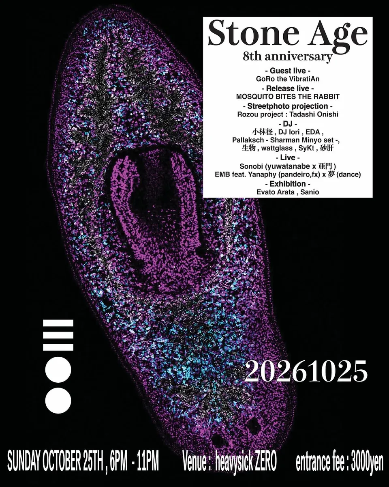

Sunday2026.10.25
Stone age 8th anniversary
@ Heavysick Zero（中野） 18:00–23:00 ADV ¥2,000 / DOOR ¥3,000
2018年から続けてきた Stone age の8周年。Special Guest に GoRo the VibratiAn を迎え、MOSQUITO BITES THE RABBIT（Billie Jean & Kagari Mosquito）の新作シングルのリリースライブを行います。
- Guest LiveGoRo the VibratiAn
- Release LiveMOSQUITO BITES THE RABBIT（Billie Jean & Kagari Mosquito）
- LiveSonobi（yuwatanabe × 亜門）/ EMB feat. Yanaphy -pandeiro- n 夢 -dance-
- DJ B1F小林径 / DJ Iori / EDA
- DJ B2FPallaksch -Sharman Minyo set- / 生物 / 砂肝 / wattglass / SyKt
- Street photoRozou project : Tadashi Onishi（projection）
- ExhibitionSanio / Evato Arata
- DesignPROTOTYPE LABORATORY（Flyer / T-shirt）